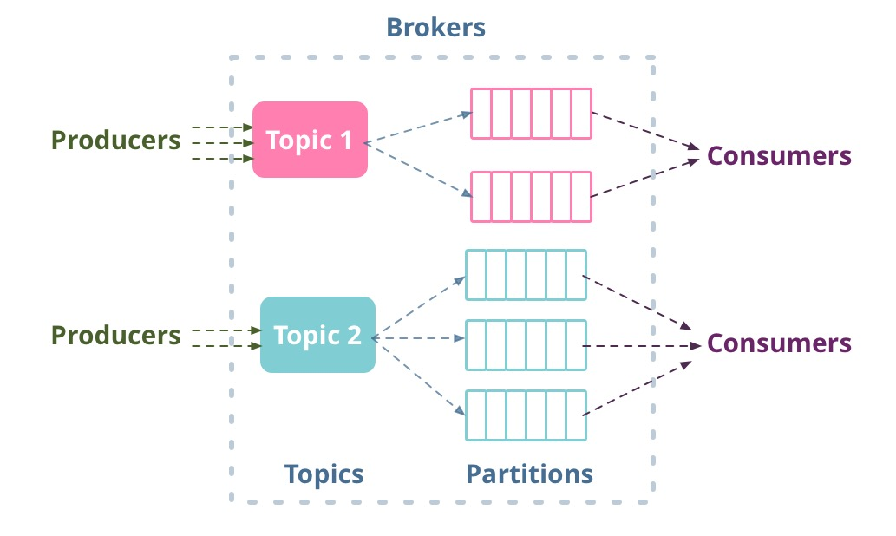

Apache Kafka
High-throughput messaging system or distributed commit logs?
why another tool?
Why are we here? What are we going to do?
How is Kafka different?
- Explicitly distributed
- Persistent messages as the common case
- Partitioned
- Replicated
- Dumb pipelines
commit log
Kafka dictionary
- Broker - Kafka Server
- Producer
- Consumer
- Topics - Multiple partitions - Partitions replicated
- Broker leader - Broker followers - ISR
Decoupled data pipeline

Topic and Partitions

Topic and Partitions

Topic and Partitions

Eco system
- Producers - Push data to broker
- Asynchronous/Synchronous send
- Batching
- Compression
- Replication
Eco system
- Consumers - Pull data from broker
- Asynchronous/Synchronous send
- Batching
- Compression
- Replication
Where to use?
- Real time event/log aggregations
- Speed layer in the Lambda architecture
- Real time news feeds/metrics/alerts/monitoring
- Data loading for data processing systems
- Event sourcing
- Commit logs